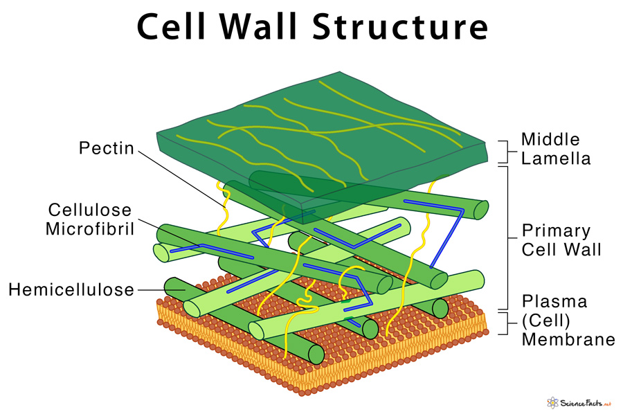
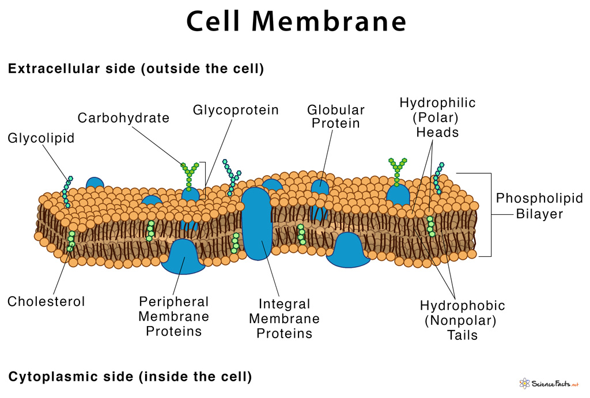
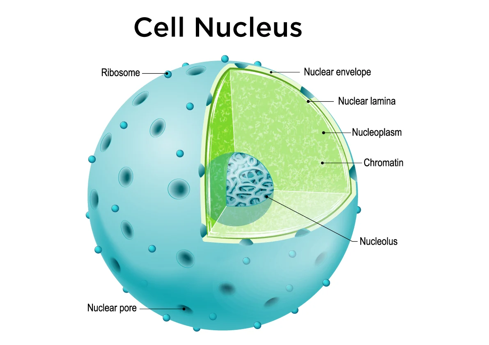

เซลล์พืชและเซลล์สัตว์ถึงแม้จะมีลักษณะและรูปร่างแตกต่างกัน ขึ้นอยู่กับชนิดและ การทำหน้าที่ของเซลล์ แต่ก็มีโครงสร้างพื้นฐานหรือส่วนประกอบที่สำคัญภายในเซลล์ คล้ายคลึงกัน ดังภาพโครงสร้างพื้นฐานส่วนใหญ่คล้ายกัน คือประกอบด้วย 3 ส่วนใหญ่ ๆ ดังนี้
ประกอบด้วย 2 ส่วน คือ ผนังเซลล์ และเยื่อหุ้มเซลล์
1.1. ผนังเซลล์ (cell wall)
เป็นผนังแข็งแรงอยู่ชั้นนอกสุด มีลักษณะเป็นรูพรุนยอมให้สารผ่านเข้าออกได้สะดวก ประกอบขึ้นจากสารเซลลูโลส (cellulose) เป็นสำคัญ ช่วยให้เซลล์พืชแข็งแรงทนทานอยู่ได้นานนับปีแม้ว่าเซลล์ อาจตายไปแล้วก็ตาม และถ้านำเซลล์พืชแก่ๆไปแช่ในน้ำกลั่น เซลล์ก็จะไม่แตก เพราะผนังเซลล์มีแรงต้านสูง ส่วนเซลล์ของสัตว์ไม่มีผนังเซลล์แต่เซลล์สัตว์บางชนิด อาจมีสารเคลือบเยื่อหุ้มเซลล์ได้ซึ่งมีลักษณะแตกต่างกันไปแล้วแต่ชนิดของเซลล์นั้นๆ ตัวอย่างเช่น เปลือกกุ้ง กระดองปูมีสารเคลือบพวกไกลโคโปรตีน (glycoprotein) เซลล์ของพวกไดอะตอม มีสารเคลือบเป็นพวกซิลิกา สารเคลือบเหล่นนี้มีประโยชน์ ทำให้เซลล์คงรูปร่างได้
1.2. เยื่อหุ้มเซลล์ (cell membrane หรือ plasma membrane)
อยู่ถัดจากผนังเซลล์เข้ามา มีลักษณะเป็นเยื่อบางๆ เหนียว ประกอบด้วยสาร ประเภทไขมันและโปรตีนรวมกันเรียกว่า ไลโพโปรตีน เยื่อหุ้มเซลล์มีรูเล็กๆ สามารถจำกัดขนาดของสารที่ผ่านเข้าออกได้จึงมีสมบัติเป็นเยื่อเลือกผ่านซึ่งสาร ขนาดเล็กผ่านได้ส่วนสารขนาดใหญ่ผ่านไม่ได้เป็นตัวควบคุมปริมาณและชนิดของสาร บางอย่างเช่น อาหาร อากาศ และสารละลายเกลือแร่ต่างๆ และยังแสดงขอบเขต ของเซลล์และห่อหุ้มส่วนประกอบในเซลล์
ประกอบด้วยของเหลวซึ่งเป็นสารประกอบหลายชนิดรวมทั้งอวัยวะ ของเซลล์หรือออร์แกเนลล์(organelle) ต่าง ๆ ซึ่งมีหน้าที่แตกต่างกัน ที่สำคัญ ได้แก่
นิวเคลียส เป็นส่วนที่สำคัญของเซลล์ โดยทั่วไปเซลล์จะมี 1 นิวเคลียส ยกเว้นในเซลล์บางชนิด เช่น เซลล์พารามีเซียมมี 2 นิวเคลียส เป็นต้น นิวเคลียส เป็นโครงสร้างของเซลล์ที่เด่นชัดมากอาจจะอยู่ตรงกลางเซลล์ หรือค่อนไปข้างใดข้าง หนึ่งของเซลล์ มีลักษณะเป็นรูปทรงกลมหรือรูปไข่
นิวเคลียสประกอบด้วยโครงสร้าง 2 ส่วน คือ
1.เยื่อหุ้มนิวเคลียส (nuclear membrane) เป็นเยื่อหุ้ม 2 ชั้น มีรู อยู่มากมายที่เรียกว่า นิวเคลียร์พอร์ (nuclear pores) ทำหน้าที่เป็นทางติดต่อกับ ร่างแหเอนโดพลาซึม เพื่อแลกเปลี่ยนสารระหว่างนิวเคลียสกับไซโทพลาซึม
2.สารในนิวเคลียส (nucleoplasm) เป็นส่วนที่อยู่ภายในนิวเคลียสทำ หน้าที่เป็นตัวกลางสำหรับเกิดปฏิกิริยาเคมีต่างๆประกอบด้วย
นิวเคลียสมีหน้าที่เป็นศูนย์กลางในการควบคุมการถ่ายทอดลักษณะทาง พันธุกรรมจากพ่อแม่ไปสู่ลูกหลานและควบคุมกระบวนการทำงานต่างๆ ของเซลล์ เช่น กระบวนการแบ่งเซลล์ การสังเคราะห์โปรตีน การสังเคราะห์เอนไซม์เป็นต้น